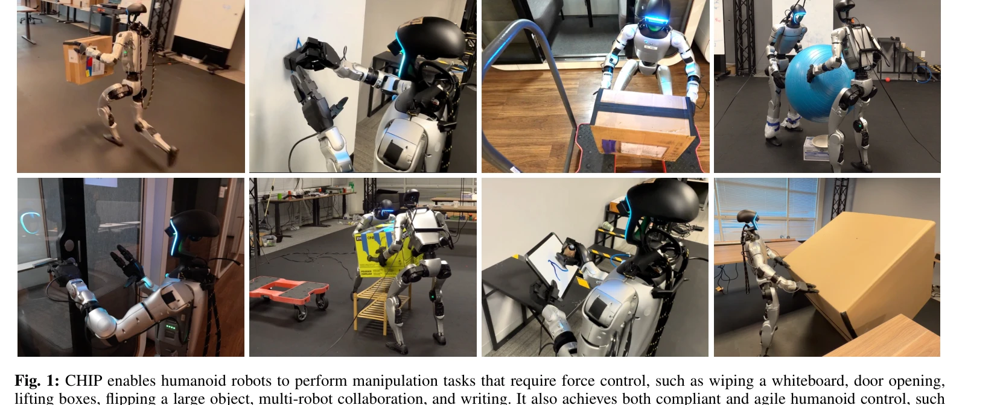
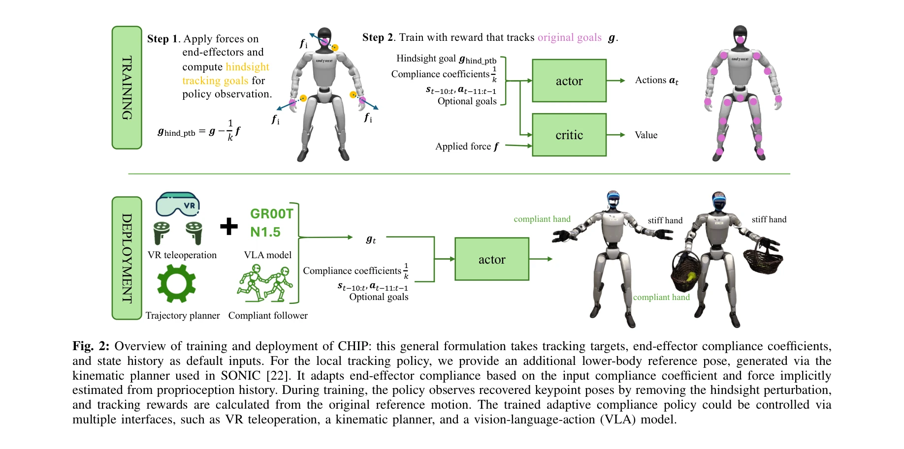

저자: Sirui Chen, Zi-ang Cao, Zhengyi Luo, Fernando Castañeda, Chenran Li, Tingwu Wang, Ye Yuan, Linxi "Jim" Fan, C. Karen Liu, Yuke Zhu | 날짜: 2026-02-09 | DOI: 10.48550/arXiv.2512.14689

Fig. 1: CHIP enables humanoid robots to perform manipulation tasks that require force control, such as wiping a whiteboa
CHIP는 hindsight perturbation을 통해 humanoid robot이 민첩한 움직임을 유지하면서도 적응적 compliance를 갖춘 forceful manipulation을 수행할 수 있게 하는 plug-and-play 모듈이다.
Fig. 1: CHIP enables humanoid robots to perform manipulation tasks that require force control, such as wiping a whiteboa

Fig. 2: Overview of training and deployment of CHIP: this general formulation takes tracking targets, end-effector compl
총평: CHIP는 humanoid의 agile motion과 compliant manipulation을 양립시키는 우아한 해결책으로, hindsight perturbation이라는 핵심 아이디어의 단순함과 기존 framework와의 호환성이 강점이다. 다만 실제 로봇 검증과 force control의 정량적 분석이 보완되면 더욱 완성도 있는 연구가 될 것이다.